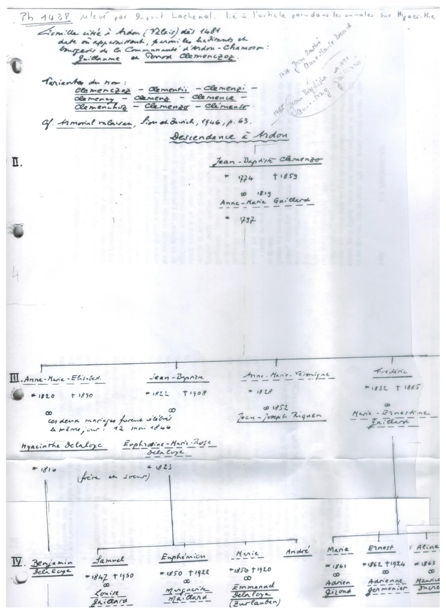
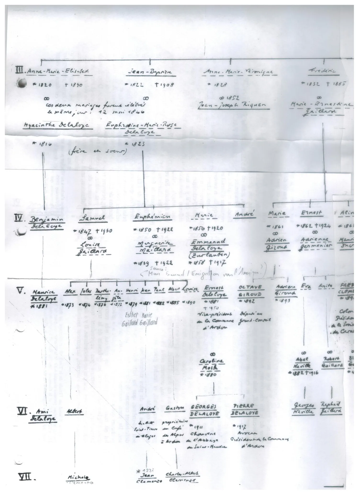

Árbol genealógico manuscrito compilado por Jean-Yves Clemenzo, titulado «Descendance à Ardon»: reconstruye la rama de los Clemenzo que permaneció en Ardon, en paralelo a la rama que emigró a Entre Ríos (ver emigración Valais → Entre Ríos). Dos fotografías del original están en el archivo de investigación.


Origen y fuentes
- Ref.: «Ph 1438, relevé par Dupont Lachenal», ligado a un artículo de los Annales sobre Hyacinthe.
- Origen: familia citada en Ardon (Valais) desde 1481, entre los habitantes y burgueses de la comunidad de Ardon-Chamoson: Guillaume y Perrod Clemenczoz.
- Variantes del apellido: Clemenczoz · Clementii · Clemenzi · Clemenay · Clemenz · Clemence · Clemenchoz · Clemenzo · Clémens.
- Cita: Armorial Valaisan, Sion & Zurich, 1946, p. 63.
- Generaciones previas (nota al margen, parcial): ~1734 Jean-Baptiste ∞ Anne-Marie Gérard → 1765 Jean-Baptiste… (lectura insegura).
Gen. II — el tronco documentado
- Jean-Baptiste Clemenzo *1774 †1859 ∞ 1819 Anne-Marie Gaillard *1797.
*1774 †1859
∞ Anne-Marie Gaillard *1797"] P --> AME["Anne-Marie-Elisabeth
*1820 †1890
∞ Hyacinthe Delaloye"] P --> JB22["Jean-Baptiste
*1822 †1908
∞ Euphrosine Delaloye"] P --> AMV["Anne-Marie-Véronique
*1828
∞ Jean-Joseph Riquen"] P --> FRE["Frédéric
*1832 †1885
∞ Marie-Ernestine Gaillard"]
Gen. III — los cuatro hijos
- Anne-Marie-Elisabeth *1820 †1890 ∞ Hyacinthe Delaloye *1816
- Jean-Baptiste *1822 †1908 ∞ Euphrosine-Marie-Rose Delaloye *1823
- Anne-Marie-Véronique *1828 ∞ 1852 Jean-Joseph Riquen
- Frédéric *1832 †1885 ∞ Marie-Ernestine Gaillard
∞ Hyacinthe Delaloye *1816"] JB22["Jean-Baptiste *1822 †1908
∞ Euphrosine Delaloye *1823"] AMV["Anne-Marie-Véronique *1828
∞ Jean-Joseph Riquen (1852)"] FRE["Frédéric *1832 †1885
∞ Marie-Ernestine Gaillard"] AME -. "misma boda · 12 may 1846" .-> JB22
Gen. IV — Clemenzo + Delaloye
Por el doble casamiento, esta generación mezcla descendencia Clemenzo y Delaloye.
- Benjamin Delaloye · Samuel *1847 †1930 (∞ Louise Gaillard) · Euphémien *1850 †1922 (∞ Marguerite Maillard) · Marie *1856 †1920 (∞ Emmanuel Delaloye «Zurlauben» *1858 †1917 — «émigration vers l'Amérique») · André · Marie *1861 (∞ Adrien Gizoud) · Ernest *1862 †1924 (∞ Adrienne Germanier) · Aline *1863.
(Clemenzo × Delaloye)"] G3 --> SAM["Samuel *1847 †1930
∞ Louise Gaillard"] G3 --> EUP["Euphémien *1850 †1922
∞ Marguerite Maillard"] G3 --> MAR1["Marie *1856 †1920
∞ Emmanuel Delaloye «Zurlauben»
→ emigración a América"] G3 --> ERN["Ernest *1862 †1924
∞ Adrienne Germanier"] G3 --> OTROS["Benjamin Delaloye · André
Marie *1861 (∞ A. Gizoud) · Aline *1863"]
Gen. V
- Maurice Delaloye *1881 · Alex *1873 · Jules *1874 · Berthe-Rémy *1876 · (ilegible) *1872 · Henri *1879 · Jean *1881 · Paul *1882 · Albert *1885 · Louise *1890.
- Ernest Delaloye *1881 †1950 — vice-président de la Commune d'Ardon.
- Octave Giroud *1882 — député au Grand-Conseil. Adrien Giroud *1893 · Eva · Anita.
- Fréd… Clemenzo — Colonel, président de la Société … de Clemenzo (cortado).
vice-président Commune d'Ardon"] G4 --> OCT["Octave Giroud *1882
député au Grand-Conseil"] G4 --> FREC["Fréd… Clemenzo
Colonel, prés. Société … de Clemenzo"] G4 --> SIB["Maurice Delaloye · Alex · Jules · Berthe-Rémy
Henri · Jean · Paul · Albert · Louise
Adrien Giroud · Eva · Anita"]
Gen. VI
- Ami Delaloye · Albert · André (Saint-Pierre-de-Clages) · Gaston (propr. Café des Alpes, Ardon).
- Georges Delaloye *1911 — chanoine de l'Abbaye de Saint-Maurice.
- Pierre Delaloye *1917 — avocat, président de la Commune d'Ardon.
chanoine Abbaye St-Maurice"] G5 --> PIE["Pierre Delaloye *1917
avocat, prés. Commune d'Ardon"] G5 --> OTROS6["Ami Delaloye · Albert
André (St-Pierre-de-Clages)
Gaston (Café des Alpes)"]
Gen. VII — entorno probable de Jean-Yves
- Michèle Clemenzo · Jean Clemenzo *1931 (?) · Charles-Albert Clemenzo.
Qué aporta a la investigación
- Confirma el tronco de Ardon con línea masculina continua desde 1481 hasta el s. XX.
- Resuelve el homónimo Jean-Baptiste: el tío †1859 = Jean-Baptiste *1774 (gen. II); el primo *1822 †1908 = su hijo (gen. III). Coincide con el acta de carencia de 1866 que aparece en las notas de François Clemenzo (1858).
- Pista de emigración: Marie Clemenzo (*1856) ∞ Emmanuel Delaloye, con nota de emigración a América — otra rama a cruzar con los datos de Entre Ríos.
La hipótesis «Elisabeth née Clementz ∞ Lambiel»
El árbol de Jean-Yves resuelve una de las candidatas de un enigma abierto: ¿quién era la «Elisabeth née Clementz» casada con Jean Antoine Lambiel en Riddes (según el censo del Valais de 1870 y el de 1850)? Sus hijos son, casi con seguridad, los «cousins Lambiel» que en 1904 iniciaron la liquidación de los bienes suizos de la rama emigrada.
Había dos candidatas:
| # | Candidata | Origen |
|---|---|---|
| 1 | Marie Elizabet Clemenzo (n. 1821) | Hermana de François Clemenzoz, hija de Jean Joseph Clemenzo — la rama emigrada |
| 2 | Anne-Marie-Elisabeth Clemenzo (n. 1820 †1890) | Rama de Jean-Baptiste/Ardon — este árbol |
El árbol descarta la candidata 2: la muestra casada con Hyacinthe Delaloye el 12-05-1846, no con un Lambiel; y la pareja Lambiel×Clementz ya tenía su primer hijo en 1842 (boda ~1840-41), imposible para alguien que se casó en 1846.
→ Queda en pie Marie Elizabet Clemenzo. Si se confirma (acta de matrimonio Lambiel×Clementz, o consulta directa a Jean-Yves), los «cousins Lambiel» serían primos hermanos de los hijos de François Clemenzoz.